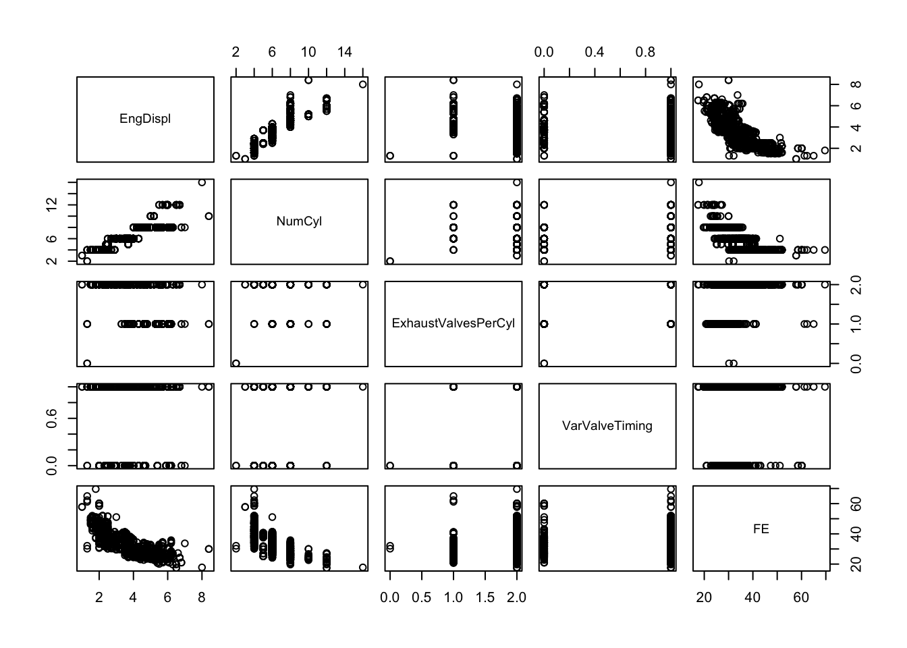
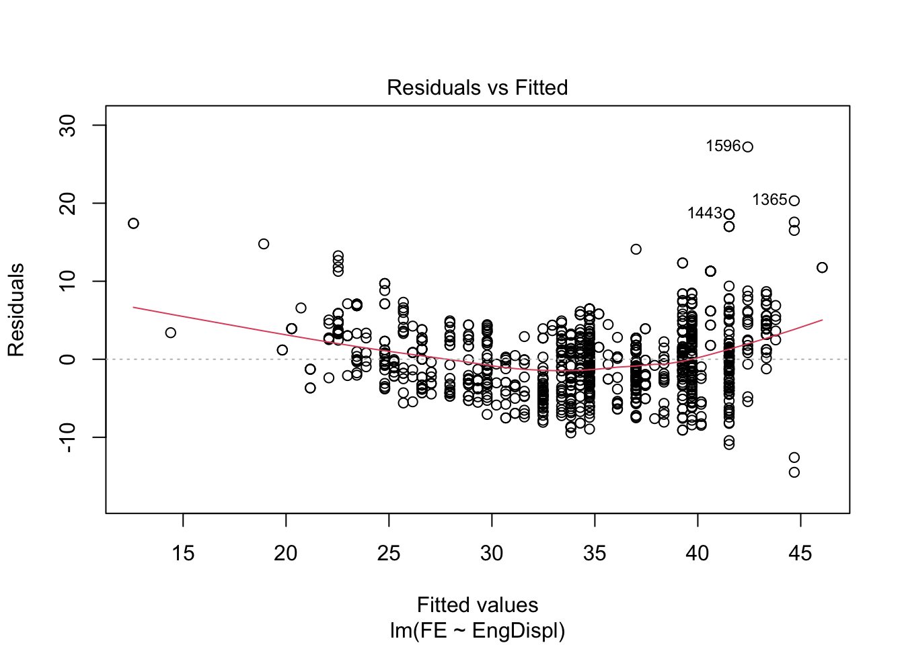
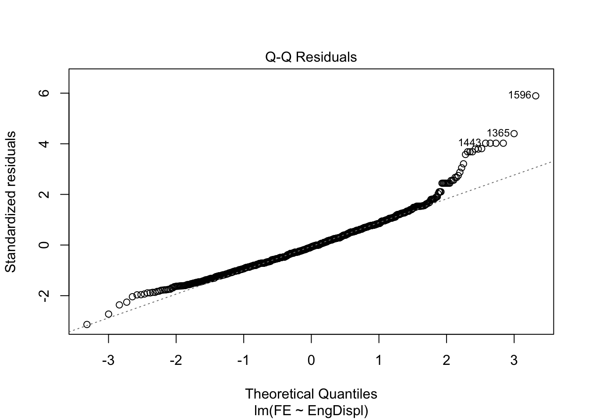
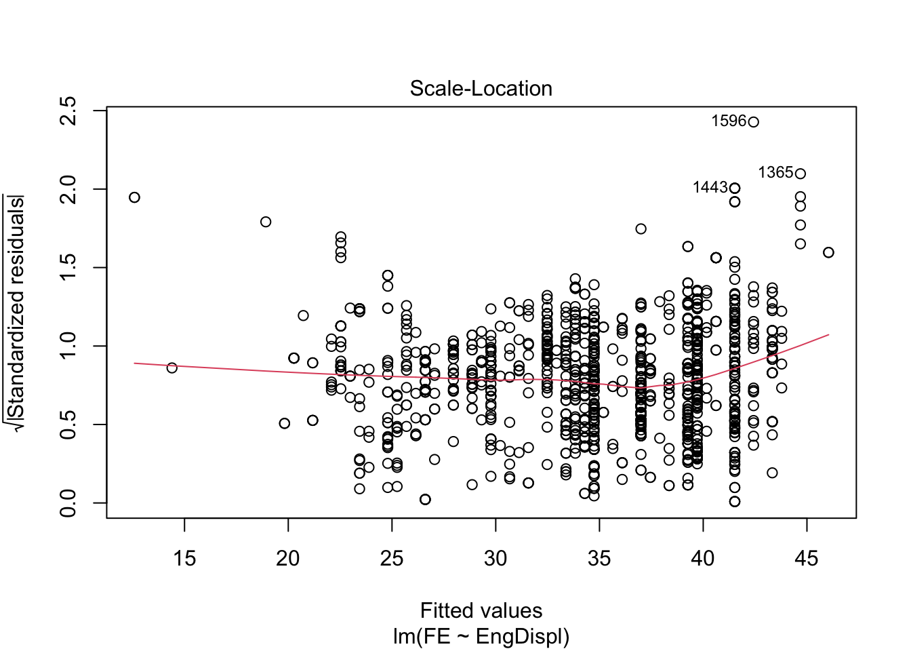
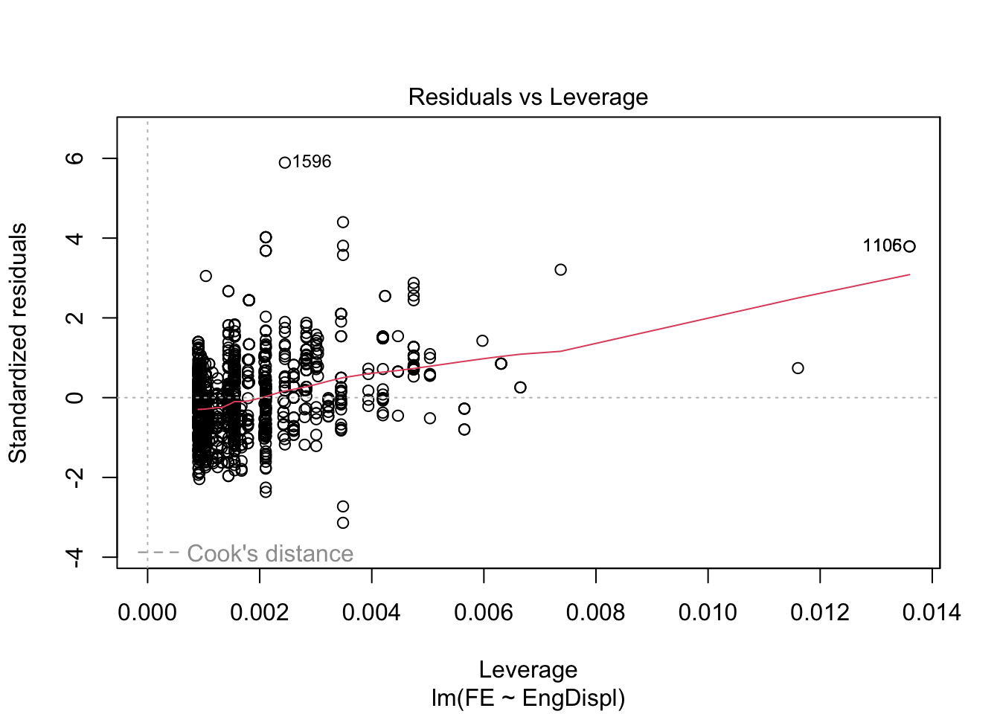
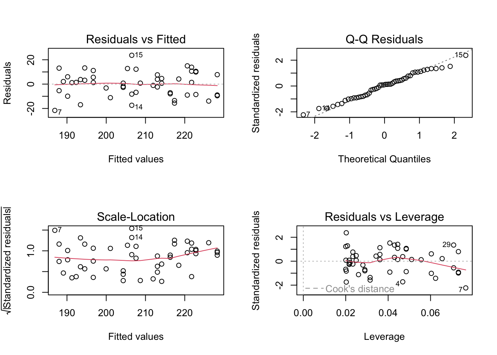
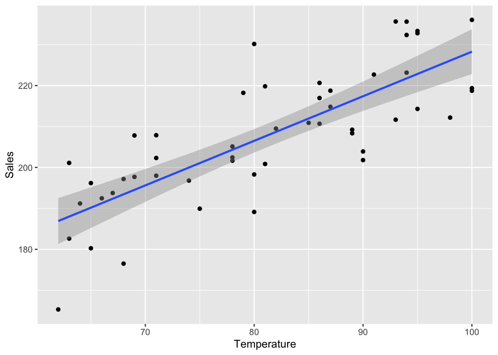
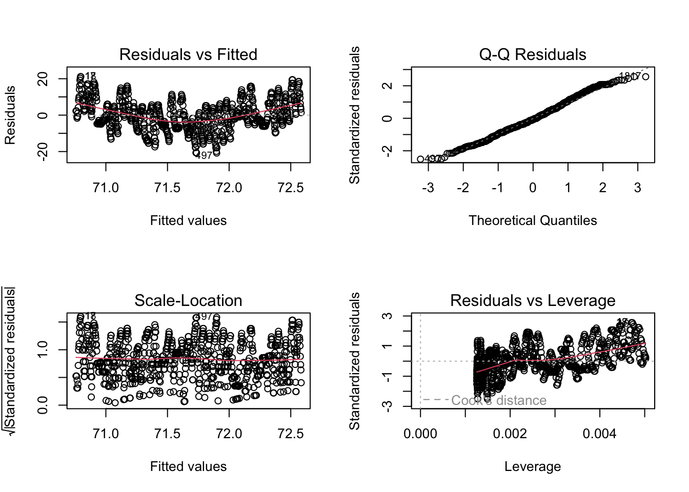
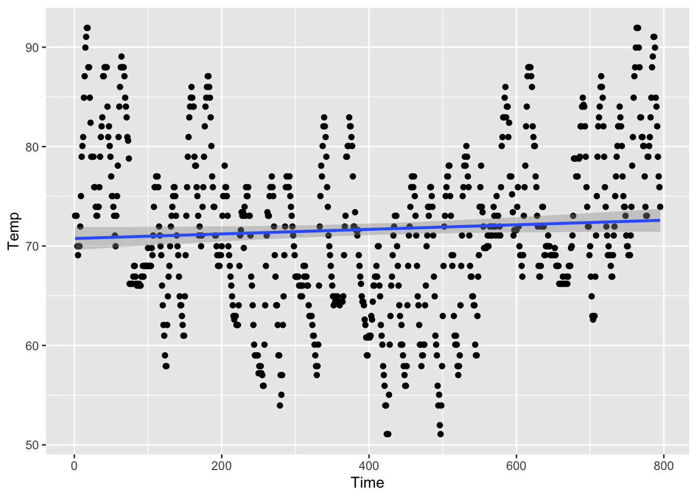

Code
library(AppliedPredictiveModeling)
data(FuelEconomy) EngDispl NumCyl ExhaustValvesPerCyl VarValveTiming
EngDispl 1.00000000 0.906260027 -0.4784380 -0.068256030
NumCyl 0.90626003 1.000000000 -0.3398518 0.005399291
ExhaustValvesPerCyl -0.47843804 -0.339851831 1.0000000 0.279339052
VarValveTiming -0.06825603 0.005399291 0.2793391 1.000000000
FE -0.78739383 -0.740217981 0.3356529 0.124952779
FE
EngDispl -0.7873938
NumCyl -0.7402180
ExhaustValvesPerCyl 0.3356529
VarValveTiming 0.1249528
FE 1.0000000
Warning in par(nfrow = c(2, 2)): "nfrow" is not a graphical parameter



Call:
lm(formula = FE ~ EngDispl, data = cars2010)
Residuals:
Min 1Q Median 3Q Max
-14.486 -3.192 -0.365 2.671 27.215
Coefficients:
Estimate Std. Error t value Pr(>|t|)
(Intercept) 50.5632 0.3985 126.89 <2e-16 ***
EngDispl -4.5209 0.1065 -42.46 <2e-16 ***
---
Signif. codes: 0 '***' 0.001 '**' 0.01 '*' 0.05 '.' 0.1 ' ' 1
Residual standard error: 4.624 on 1105 degrees of freedom
Multiple R-squared: 0.62, Adjusted R-squared: 0.6196
F-statistic: 1803 on 1 and 1105 DF, p-value: < 2.2e-16FE is EnglDispl
Pearson's product-moment correlation
data: cars2010$FE and cars2010$EngDispl
t = -42.46, df = 1105, p-value < 2.2e-16
alternative hypothesis: true correlation is not equal to 0
95 percent confidence interval:
-0.8087913 -0.7639144
sample estimates:
cor
-0.7873938 EngDispl NumCyl ExhaustValvesPerCyl VarValveTiming
EngDispl 1.00000000 0.906260027 -0.4784380 -0.068256030
NumCyl 0.90626003 1.000000000 -0.3398518 0.005399291
ExhaustValvesPerCyl -0.47843804 -0.339851831 1.0000000 0.279339052
VarValveTiming -0.06825603 0.005399291 0.2793391 1.000000000EnglDispl and NumCyl have a large correlation between one anotherFE can be explained by EngDispl alone── Attaching core tidyverse packages ──────────────────────── tidyverse 2.0.0 ──
✔ dplyr 1.1.2 ✔ readr 2.1.4
✔ forcats 1.0.0 ✔ stringr 1.5.0
✔ ggplot2 3.4.2 ✔ tibble 3.2.1
✔ lubridate 1.9.2 ✔ tidyr 1.3.0
✔ purrr 1.0.1
── Conflicts ────────────────────────────────────────── tidyverse_conflicts() ──
✖ dplyr::filter() masks stats::filter()
✖ dplyr::lag() masks stats::lag()
ℹ Use the conflicted package (<http://conflicted.r-lib.org/>) to force all conflicts to become errorsRows: 50
Columns: 2
$ Temperature <int> 65, 87, 78, 68, 98, 86, 62, 86, 71, 85, 78, 90, 63, 80, 80…
$ Sales <dbl> 180.25, 218.75, 202.44, 176.50, 212.18, 210.68, 165.30, 22…
`geom_smooth()` using formula = 'y ~ x'
Call:
lm(formula = Sales ~ Temperature, data = icecream)
Residuals:
Min 1Q Median 3Q Max
-21.603 -8.159 1.005 7.212 23.666
Coefficients:
Estimate Std. Error t value Pr(>|t|)
(Intercept) 119.3895 10.1931 11.713 1.12e-15 ***
Temperature 1.0889 0.1241 8.771 1.54e-11 ***
---
Signif. codes: 0 '***' 0.001 '**' 0.01 '*' 0.05 '.' 0.1 ' ' 1
Residual standard error: 10.07 on 48 degrees of freedom
Multiple R-squared: 0.6158, Adjusted R-squared: 0.6078
F-statistic: 76.94 on 1 and 48 DF, p-value: 1.543e-11Temperature seems to be significant in explaining SalesTemperature is 1.0889Rows: 795
Columns: 3
$ Temp <dbl> 73.04, 73.04, 73.04, 69.98, 69.08, 69.98, 69.98, 71.96, 75.02, …
$ TimeSq <int> 1, 4, 9, 16, 25, 36, 49, 64, 81, 100, 121, 144, 169, 196, 225, …
$ Time <int> 1, 2, 3, 4, 5, 6, 7, 8, 9, 10, 11, 12, 13, 14, 15, 16, 17, 18, …
`geom_smooth()` using formula = 'y ~ x'
Call:
lm(formula = Temp ~ Time, data = minntemp)
Residuals:
Min 1Q Median 3Q Max
-20.8189 -5.4495 -0.5359 5.1432 21.1455
Coefficients:
Estimate Std. Error t value Pr(>|t|)
(Intercept) 70.755366 0.588230 120.285 <2e-16 ***
Time 0.002301 0.001280 1.797 0.0727 .
---
Signif. codes: 0 '***' 0.001 '**' 0.01 '*' 0.05 '.' 0.1 ' ' 1
Residual standard error: 8.285 on 793 degrees of freedom
Multiple R-squared: 0.004056, Adjusted R-squared: 0.0028
F-statistic: 3.229 on 1 and 793 DF, p-value: 0.07271time is related to temperature at a confidence level of 0.05